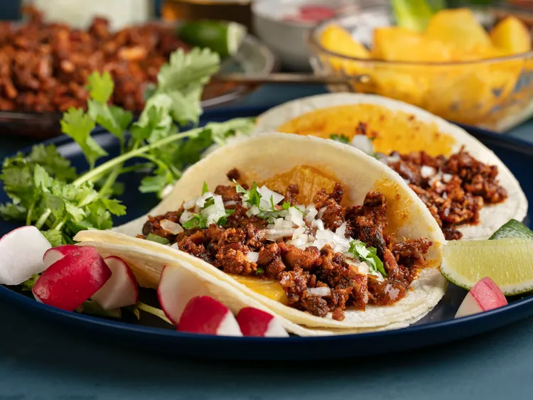

Odin Recipes

A magnificent picture of a beautiful Taco!
Ingredients
- 8 dried pasilla chiles, seeded and torn to pieces
- 8 dried pasilla chiles, seeded and torn to pieces
- 8 cloves garlic, chopped
- 1 teaspoon achiote powder
- ½ teaspoon ground cumin
- 5 whole cloves
- 1 cup white vinegar
- salt to taste
- 2 pounds pork tenderloin, thinly sliced
- ½ cup chopped pineapple
- 32 (5 inch) corn tortillas
- 1 small onion, chopped
- ½ cup chopped fresh cilantro
- 4 limes, cut in wedges